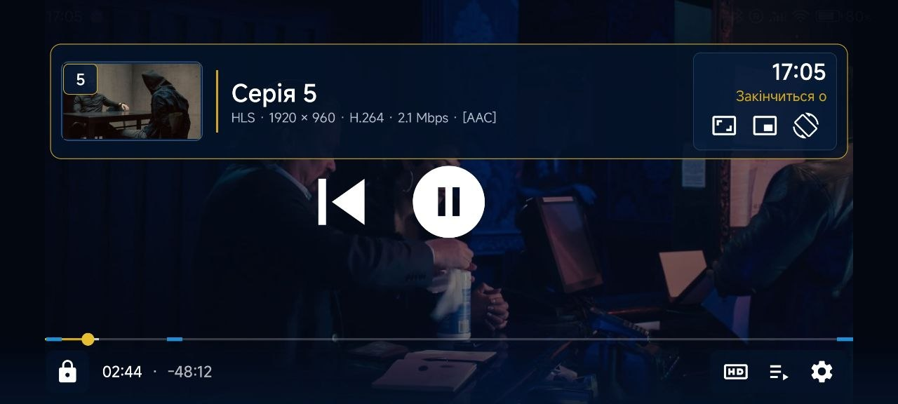

Потоки й файли
HLS, DASH, RTMP, RTSP, HTTP, MP4, MKV та AVI. Апаратне декодування з резервним програмним режимом.
H.264HEVCAV1Dolby Vision
UA Player відкриває потоки, плейлисти й субтитри з LAMPA та LampaUA на телефоні, планшеті, TV box і телевізорі.

Один плеєр
Без переходів між кількома застосунками: від вибору серії до наступного епізоду.
HLS, DASH, RTMP, RTSP, HTTP, MP4, MKV та AVI. Апаратне декодування з резервним програмним режимом.
Дві доріжки, пошук онлайн, власний стиль, синхронізація та переклад українською.
Плейлист епізодів, обкладинки, продовження з місця зупинки та автоматичний перехід далі.
Кімнати з паролем, QR-запрошення та синхронізація перегляду між сумісними пристроями.
Помітний фокус, логічний Back, швидке перемотування та повне керування пультом без сенсорного екрана.
Відновлення після мережевих збоїв, HLS і torrent-затримок, помилок декодера та довгих пауз.
Для екосистеми LAMPA
Плеєр отримує назву, серію, постер, якість, заголовки, субтитри й скіпи, а після перегляду повертає позицію назад у LAMPA.
Докладно про інтеграціюТекст має бути вчасно
Обирайте дві мови одночасно, шукайте субтитри за назвою серіалу, змінюйте вигляд і виправляйте затримку від −30 до +30 секунд.
Готові дивитися?
Основний універсальний APK для Android 6.0+ та Android TV. Файл завантажується безпосередньо з публічного GitHub Release.
8f84c93dbb107d34fa3bfe99bef529abb0e7afec09e02ee63a7e47a073075046